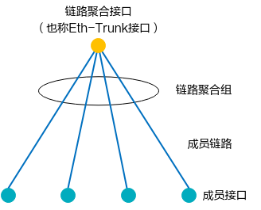
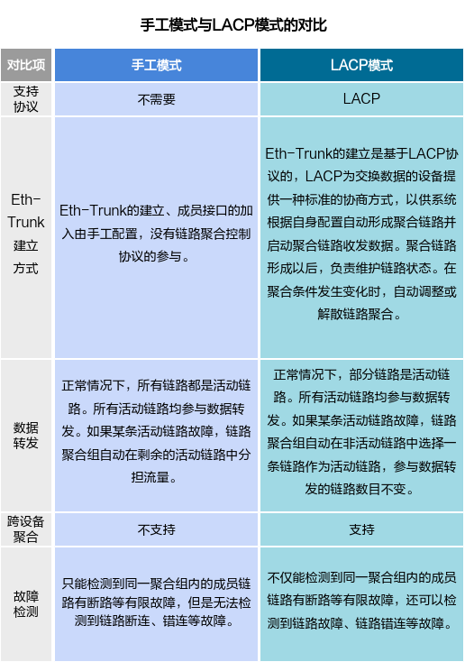
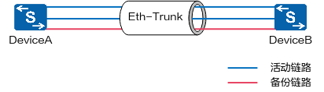
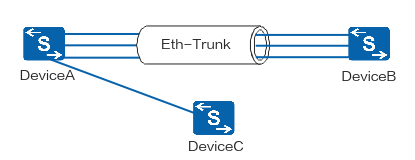
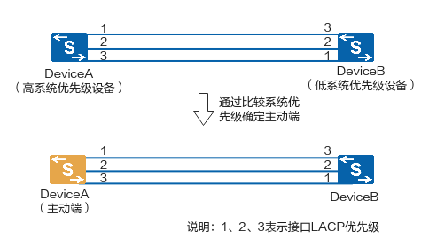
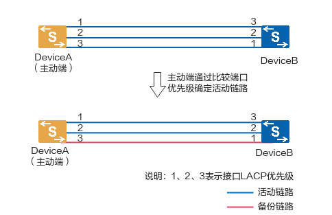
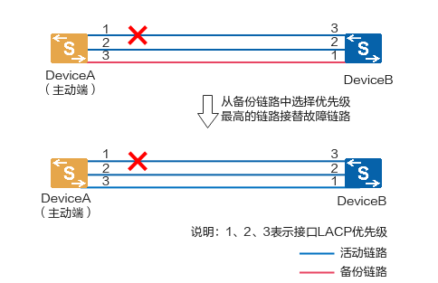
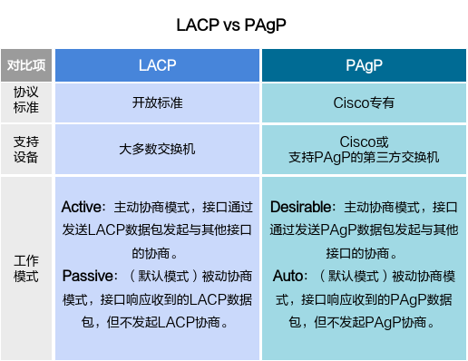

链路聚合LACP
LACP（Link Aggregation Control Protocol，链路聚合控制协议）是一种基于IEEE802.3ad标准的实现链路动态聚合与解聚合的协议，它是链路聚合中常用的一种协议。链路聚合组中启用了LACP协议的成员端口通过发送LACPDU报文进行交互，双方对哪些端口能够发送和接收报文达成一致，确定承担业务流量的链路。此外，当聚合条件发生变化时，如某个链路发生故障，LACP模式会自动调整聚合组中的链路，组内其他可用成员链路接替故障链路维持负载平衡。这样在不进行硬件升级的情况下，可以增加设备之间的逻辑带宽，提高网络的可靠性。
1. LACP与LAG是什么关系？¶
链路聚合组LAG（Link Aggregation Group）是指将若干条以太链路捆绑在一起形成一条逻辑链路，也称Eth-trunk链路。每个聚合组对应一个链路聚合接口或Eth-Trunk接口，组成Eth-Trunk接口的各个物理接口称为成员接口，成员接口对应的链路称为成员链路。链路聚合接口可以作为普通的以太网接口来使用，与普通以太网接口的差别在于：转发的时候链路聚合组需要从成员接口中选择一个或多个接口来进行数据转发。

链路聚合组与链路聚合接口、成员接口和成员链路关系示意图
{kind=link}
LAG是一种链路聚合技术，当在两台交换机之间并行连接多个端口并将它们配置为LAG时，链路聚合组就会形成，而LACP是一种自动建立LAG的控制协议，用于启用LAG自动配置网络交换机端口、分离链路故障和激活故障切换。
LAG主要有两种模式，分别是手工模式和LACP模式。
- 手工模式：指LAG不启用任何链路聚合协议，Eth-Trunk的建立、成员接口的加入由手工配置。
- LACP模式：指LAG启用LACP链路聚合协议，Eth-Trunk的建立、成员接口的加入基于LACP协议协商完成。
部分设备支持手工模式，但不支持LACP模式，LACP模式需要本端和对端设备同时启用LACP协议，所选择的活动接口必须保持一致，才能建立LAG，如果对端设备未启用LACP协议，本端LAG会尝试将数据包传输到远程单个接口，可能导致通信失败。
 手工模式与LACP模式的对比
{kind=link}
2. 为什么要用LACP？¶
2.1. LACP模式对数据传输更加稳定和可靠¶
手工模式下，所有链路都是活动链路，所有活动链路均参与数据转发，平均分担流量。如果某条活动链路故障，链路聚合组自动在剩余的活动链路中平均分担流量。
LACP模式下，由LACP确定聚合组中的活动和非活动链路，又称为M:N模式，即M条活动链路与N条备份链路的模式。这种模式提供了更高的链路可靠性，并且可以在M条链路中实现不同方式的负载均衡。
如下图所示，两台设备间有M+N条链路，在聚合链路上转发流量时在M条链路上分担负载，即活动链路，不在另外的N条链路转发流量，这N条链路提供备份功能，即备份链路。此时链路的实际带宽为M条链路的总和，但是能提供的最大带宽为M+N条链路的总和。当M条链路中有一条链路故障时，LACP会从N条备份链路中找出一条优先级高的可用链路替换故障链路。此时链路的实际带宽还是M条链路的总和，但是能提供的最大带宽就变为M+N-1条链路的总和。
 M:N备份示意图
{kind=link}
2.2. LACP模式对聚合链路组的故障检测更加准确和有效¶
手工模式只能检测到同一聚合组内的成员链路有断路等有限故障，LACP模式不仅能够检测到同一聚合组内的成员链路有断路等有限故障，还可以检测到链路故障、链路错连等故障。
如下图所示，DeviceA与DeviceB之间创建Eth-trunk，需要将DeviceA上的四个接口与DeviceB捆绑成一个Eth-Trunk。由于错将DeviceA上的一个接口与DeviceC相连，这将会导致DeviceA向DeviceB传输数据时可能会将本应该发到DeviceB的数据发送到DeviceC上。
手工模式的Eth-trunk不能及时检测到该故障，如果在DeviceA和DeviceB上都启用LACP协议，经过协商后，Eth-Trunk就会选择正确连接的链路作为活动链路来转发数据，从而DeviceA发送的数据能够正确到达DeviceB。
 Eth-Trunk错连示意图
{kind=link}
3. LACP是如何工作的？¶
LACP为数据交换设备提供一种标准的协商方式，系统根据自身配置自动形成聚合链路，并启动聚合链路收发数据。LACP通过链路聚合控制协议数据单元LACPDU（Link Aggregation Control Protocol Data Unit）与对端交互信息，LACPDU报文中包含设备的系统优先级、MAC地址、接口优先级、接口号和操作Key等信息，对端接收到这些信息后，将这些信息与其它端口所保存的信息比较以选择能够汇聚的端口，双方对端口加入或退出某个动态聚合组达成一致，确定承担业务流量的链路。
LACP主要工作主要包含互发LACPDU报文、确定主动端、确定活动链路、链路切换，具体实现如下。
3.1. 互发LACPDU报文¶
在对接的两台设备上创建Eth-Trunk并配置为LACP模式，然后向Eth-Trunk中手工加入成员接口。此时成员接口上便启用了LACP协议，两端互发LACPDU报文，LACPDU报文中包含设备的系统优先级、MAC地址、接口优先级、接口号和操作Key等信息。
{kind=link}
3.2. 确定主动端¶
两端设备均会收到对端发来的LACPDU报文。以DeviceB为例，当DeviceB收到DeviceA发送的报文时，DeviceB会查看并记录对端信息，然后比较系统优先级字段，如果DeviceA的系统优先级高于本端的系统优先级，则确定DeviceA为LACP主动端。如果DeviceA和DeviceB的系统优先级相同，比较两端设备的MAC地址，MAC地址小的一端为LACP主动端。
 确定主动端
{kind=link}
3.3. 确定活动链路¶
选出主动端后，设备两端会以主动端的接口优先级来选择活动接口，如果主动端的接口优先级都相同则选择接口编号比较小的为活动接口。LACP模式支持设置活动接口数上限阈值以在保证带宽的情况下提高网络可靠性，当前活动接口数目达到上限阈值时，再向Eth-Trunk中添加成员接口，不会增加Eth-Trunk活动接口的数目，超过上限阈值的链路状态将被置为Down，作为备份链路。两端设备选择了一致的活动接口，活动链路组便可以建立起来，这些活动链路以负载分担的方式转发数据。
如下图所示，LACP模式下，如果活动链路数上限阈值为2，通过LACP协商后，链路1和链路2因为优先级较高被选作活动链路，链路3则为备份链路。聚合链路中的活动链路参与数据转发，总带宽等于被选中的活动链路带宽之和。
 确定活动链路
{kind=link}
3.4. 链路切换¶
LACP模式链路聚合组中如果某条活动链路故障，链路聚合组自动在备份链路中选择一条优先级最高的链路作为活动链路接替故障链路，参与数据转发的链路数目不变，保证数据传输的可靠性。LACP模式链路聚合组两端设备中任何一端检测到以下事件，都会触发聚合组的链路切换：
- 链路Down事件。
- 以太网OAM检测到链路失效。
- LACP协议发现链路故障。
- 接口不可用。
- 在使能了LACP抢占功能的前提下，更改备份接口的优先级高于当前活动接口的优先级。
当满足上述切换条件其中之一时，按照如下步骤进行切换：
- 关闭故障链路。
- 从N条备份链路中选择优先级最高的链路接替活动链路中的故障链路。
- 优先级最高的备份链路转为活动状态并转发数据，完成切换。
 链路切换
{kind=link}
4. LACP和PAgP有什么区别？¶
LACP和PAgP（Port Aggregation Protocol，端口汇聚协议）是链路聚合中使用最广泛的两种协商协议。LACP和PAgP的功能类似，都是通过捆绑链路并协商成员链路之间的流量提高网络的可用性和稳定性。LACP和PAgP数据包在交换机之间通过支持以太网通道的端口交换。
它们之间最大的区别是支持的供应商不同，LACP是开放标准，可以在大多数交换机上运行，如华为S5700系列交换机，而PAgP是Cisco专有协议，只能在Cisco或支持PAgP的第三方交换机上运行。
 LACP vs PAgP
{kind=link}
参考资源